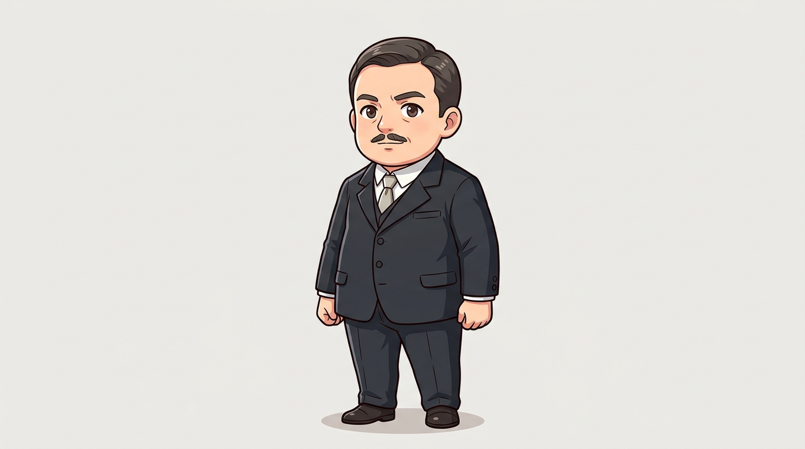
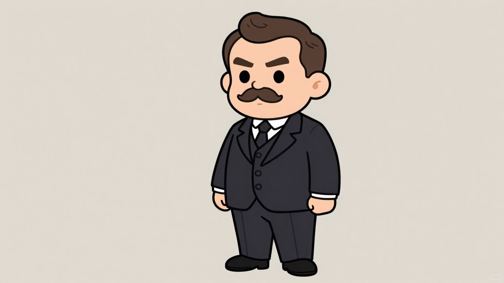
(masterpiece, best quality:1.2), 2D cartoon illustration, anime art style, chibi characters, clean line art, cell shading, flat colors, Character reference sheet, SINGLE character only, full-body standing pose, clear face, distinct hair, body proportions and signature outfit colors, no other characters, no collage, no extra props, no text, no labels, no watermarks, 安德烈米其林 (André Michelin): A historical figure depicted in Q版 (chibi) style. His face is round and expressive, with a neat, small mustache and a thoughtful or determined expression. He has a sturdy, slightly portly build, reflecting a businessman of the early 20th century, all in chibi proportions. Dressed in era-appropriate European business attire, such as a dark, well-fitted suit, white shirt, and tie. Clothing is simplified with clear, crisp outlines and smooth cel-shading, lacking intricate fabric patterns., clean minimalist neutral background, soft even lighting, 16:9 widescreen composition
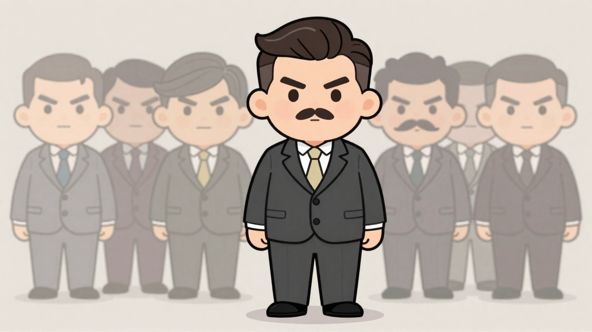
The generated image successfully captures the chibi art style and general character build. However, it significantly deviates in facial expression, presenting an angry demeanor instead of the target's calm look. Crucially, the image fails to produce a single character on a minimalist background, instead generating multiple blurred figures, and the suit color is too light with an incorrect button count.
(masterpiece, best quality:1.2), 2D cartoon illustration, anime art style, chibi character, clean medium-thick line art, subtle cel-shading, flat colors, (SINGLE character:4.0), (SOLO character:4.0), (one character:4.0), full-body standing pose, clear face, distinct hair, chibi proportions, Round face, (calm neutral expression:3.5), (gentle eyes:3.2), (soft gaze:3.0), (very small neat short mustache:3.0), (thin pencil mustache:3.2), (dark mustache:1.8), (neatly combed hair:1.8), (distinct classic side part hairstyle:2.0), (smoothly combed dark brown hair:2.0), Sturdy build, slightly portly but not excessively wide. Era-appropriate European business attire, (deep charcoal grey well-fitted suit:2.5), (very dark grey suit:2.0), white shirt, (light cream tie:1.8), (light beige tie:1.8). Suit jacket with (three buttons:3.0), (3 buttons on suit jacket:3.0), (classic suit lapels:1.5). Clothing simplified with crisp outlines and smooth cel-shading. (Clean minimalist neutral background:2.0), (solid color background:1.8), soft even lighting, 16:9 widescreen composition.
(worst quality, low quality:1.4), rough lines, messy sketch, blur, deformed, bad anatomy, bad proportions, missing fingers, extra digits, signature, watermark, text, words, Chinese characters, subtitles, logos, thick lines, flat shading, (angry expression:4.5), (stern expression:4.5), (furrowed brows:4.5), (scowling:4.5), (large mustache:3.5), (prominent mustache:3.5), (handlebar mustache:2.5), (bushy mustache:2.5), (thick mustache:3.5), (no mustache:1.5), (undercut hairstyle:2.0), (fade hairstyle:2.0), (grey hair:2.5), (grey temples:2.5), (two buttons:3.5), (2 buttons:3.5), (fewer than three buttons:3.5), excessively wide body, overly portly, (light grey suit:3.0), (medium grey suit:3.0), (black tie:2.0), (dark tie:2.0), (multiple characters:5.0), (two characters:4.0), (three characters:4.0), (crowd:4.5), (group:4.5), (blurred background characters:4.0), (faded background characters:4.0), (character sheet:2.5), (reference sheet:2.5)
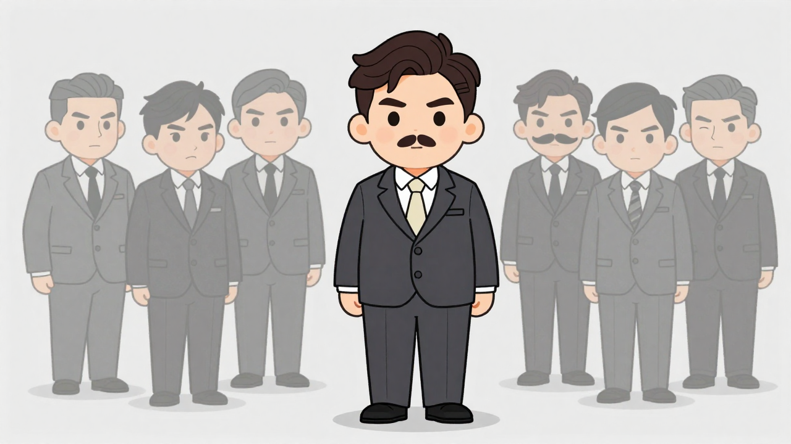
The generated image successfully captures the chibi art style and general character build. However, it significantly deviates from the target by including multiple blurred background characters despite strong negative prompts for a single subject. Additionally, the main character's suit color is too light, the jacket has two buttons instead of three, and the mustache is thicker than desired, while the expression is more stern than calm.
(masterpiece, best quality:1.2), 2D cartoon illustration, anime art style, chibi character, clean medium-thick line art, subtle cel-shading, flat colors, (SINGLE character:3.5), (SOLO character:3.5), (one character:3.5), full-body standing pose, clear face, distinct hair, chibi proportions, Round face, (calm neutral expression:3.0), (gentle eyes:2.8), (soft gaze:2.5), (small neat short mustache:2.5), (thin mustache:2.8), (dark mustache:1.5), (neatly combed hair:1.6), (classic side part hairstyle:1.6), (dark brown hair:1.8), Sturdy build, slightly portly but not excessively wide. Era-appropriate European business attire, (dark charcoal grey well-fitted suit:2.0), white shirt, (light cream tie:1.5), (light beige tie:1.5). Suit jacket with (three buttons:2.5), (classic suit lapels:1.2). Clothing simplified with crisp outlines and smooth cel-shading. Clean minimalist neutral background, soft even lighting, 16:9 widescreen composition.
(worst quality, low quality:1.4), rough lines, messy sketch, blur, deformed, bad anatomy, bad proportions, missing fingers, extra digits, signature, watermark, text, words, Chinese characters, subtitles, logos, thick lines, flat shading, (angry expression:4.0), (stern expression:4.0), (furrowed brows:4.0), (scowling:4.0), (large mustache:3.0), (prominent mustache:3.0), (handlebar mustache:2.0), (bushy mustache:2.0), (thick mustache:3.0), (no mustache:1.5), (undercut hairstyle:2.0), (fade hairstyle:2.0), (grey hair:2.5), (grey temples:2.5), (two buttons:3.0), (2 buttons:3.0), (fewer than three buttons:3.0), excessively wide body, overly portly, (light grey suit:2.5), (medium grey suit:2.5), (black tie:2.0), (dark tie:2.0), (multiple characters:4.5), (two characters:3.5), (three characters:3.5), (crowd:4.0), (group:4.0), (character sheet:2.5), (reference sheet:2.5)
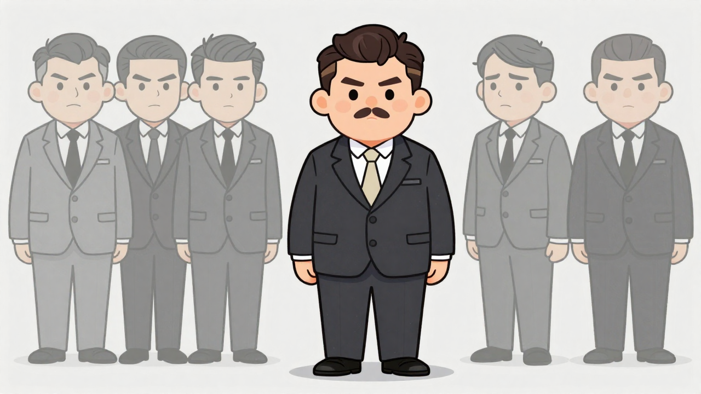
The current image successfully captures the chibi art style, character build, and attire details like the dark suit and cream tie. However, it significantly deviates from the target by depicting an angry expression instead of a calm, neutral one, and crucially, it generates multiple characters instead of a single one, which are major discrepancies.
(masterpiece, best quality:1.2), 2D cartoon illustration, anime art style, chibi character, clean medium-thick line art, subtle cel-shading, flat colors, (SINGLE character:2.8), full-body standing pose, clear face, distinct hair, chibi proportions, Round face, (calm neutral expression:2.5), (thoughtful expression:2.2), (gentle eyes:2.2), (soft gaze:1.8), (small neat short mustache:2.5), (thin mustache:2.4), (dark mustache:1.5), (neatly combed hair:1.6), (classic side part hairstyle:1.6), (dark brown hair:1.8), Sturdy build, slightly portly but not excessively wide. Era-appropriate European business attire, (dark charcoal grey well-fitted suit:2.0), white shirt, (light cream tie:1.5), (light beige tie:1.5). Suit jacket with (three buttons:2.5), (classic suit lapels:1.2). Clothing simplified with crisp outlines and smooth cel-shading. Clean minimalist neutral background, soft even lighting, 16:9 widescreen composition.
(worst quality, low quality:1.4), rough lines, messy sketch, blur, deformed, bad anatomy, bad proportions, missing fingers, extra digits, signature, watermark, text, words, Chinese characters, subtitles, logos, thick lines, flat shading, (angry expression:3.5), (stern expression:3.5), (furrowed brows:3.5), (scowling:3.5), (large mustache:3.0), (prominent mustache:3.0), (handlebar mustache:2.0), (bushy mustache:2.0), (no mustache:1.5), (undercut hairstyle:2.0), (fade hairstyle:2.0), (grey hair:2.5), (grey temples:2.5), (two buttons:3.0), (2 buttons:3.0), (fewer than three buttons:3.0), excessively wide body, overly portly, (light grey suit:2.5), (medium grey suit:2.5), (black tie:2.0), (dark tie:2.0), (multiple characters:3.5), (two characters:3.5), (three characters:3.5), (character sheet:2.5), (reference sheet:2.5)
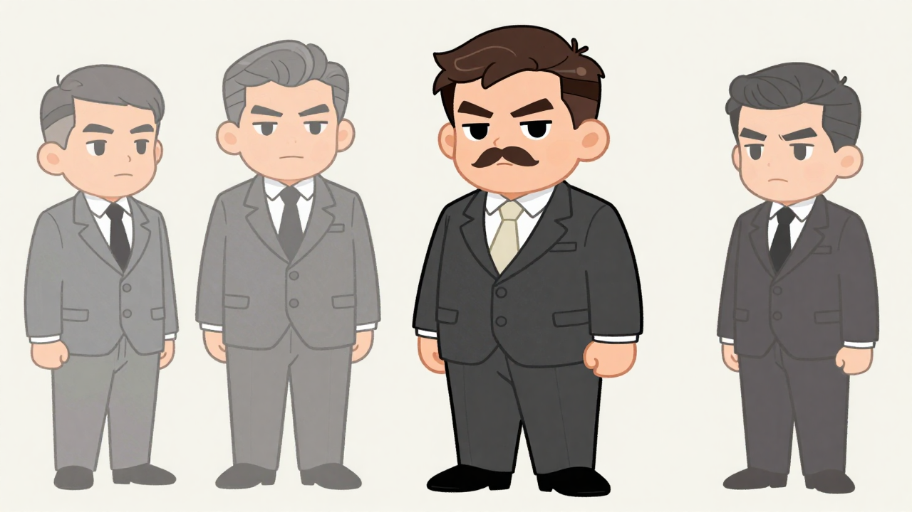
The generated image successfully captures the desired 2D chibi art style, suit details, and general body proportions. However, the primary character's facial expression is stern and angry, directly contradicting the target's calm and gentle demeanor. Additionally, the output is a character reference sheet with multiple figures, deviating from the requested single character composition.
(masterpiece, best quality:1.2), 2D cartoon illustration, anime art style, chibi character, clean medium-thick line art, subtle cel-shading, flat colors, character reference sheet, (SINGLE character:2.2), full-body standing pose, clear face, distinct hair, chibi proportions, Round face, (calm neutral expression:2.0), (thoughtful expression:1.8), (gentle eyes:1.8), (small neat short mustache:2.2), (thin mustache:2.1), (dark mustache:1.5), (neatly combed hair:1.6), (classic side part hairstyle:1.6), (dark brown hair:1.8), Sturdy build, slightly portly but not excessively wide. Era-appropriate European business attire, (dark charcoal grey well-fitted suit:2.0), white shirt, (light cream tie:1.5), (light beige tie:1.5). Suit jacket with (three buttons:2.5), (classic suit lapels:1.2). Clothing simplified with crisp outlines and smooth cel-shading. Clean minimalist neutral background, soft even lighting, 16:9 widescreen composition.
(worst quality, low quality:1.4), rough lines, messy sketch, blur, deformed, bad anatomy, bad proportions, missing fingers, extra digits, signature, watermark, text, words, Chinese characters, subtitles, logos, thick lines, flat shading, (angry expression:3.0), (stern expression:3.0), (furrowed brows:3.0), (scowling:3.0), (large mustache:2.5), (prominent mustache:2.5), (handlebar mustache:1.8), (bushy mustache:1.8), (no mustache:1.5), (undercut hairstyle:2.0), (fade hairstyle:2.0), (grey hair:2.5), (grey temples:2.5), (two buttons:3.0), (2 buttons:3.0), (fewer than three buttons:3.0), excessively wide body, overly portly, (light grey suit:2.5), (medium grey suit:2.5), (black tie:2.0), (dark tie:2.0), (multiple characters:3.0), (two characters:3.0), (three characters:3.0).
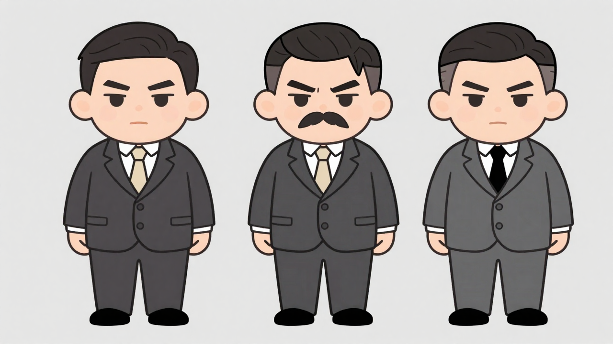
The generated image captures the overall chibi art style and general attire well, but significantly deviates in critical aspects. The most prominent issues are the generation of three characters instead of a single one, the consistently angry facial expressions, and the incorrect number of suit buttons (two instead of three).
(masterpiece, best quality:1.2), 2D cartoon illustration, anime art style, chibi character, clean medium-thick line art, subtle cel-shading, flat colors, character reference sheet, (SINGLE character:1.8), full-body standing pose, clear face, distinct hair, chibi proportions, Round face, (calm neutral expression:1.8), (thoughtful expression:1.6), (gentle eyes:1.6), (small neat short mustache:2.0), (thin mustache:1.9), (neatly combed hair:1.6), (classic side part hairstyle:1.6), Sturdy build, slightly portly but not excessively wide. Era-appropriate European business attire, (dark charcoal grey well-fitted suit:1.8), white shirt, (light cream tie:1.5), (light beige tie:1.5). Suit jacket with (three buttons:2.0), (classic suit lapels:1.2). Clothing simplified with crisp outlines and smooth cel-shading. Clean minimalist neutral background, soft even lighting, 16:9 widescreen composition.
(worst quality, low quality:1.4), rough lines, messy sketch, blur, deformed, bad anatomy, bad proportions, missing fingers, extra digits, signature, watermark, text, words, Chinese characters, subtitles, logos, thick lines, flat shading, (angry expression:2.5), (stern expression:2.5), (furrowed brows:2.5), (scowling:2.5), (large mustache:1.8), (prominent mustache:1.8), (handlebar mustache:1.8), (bushy mustache:1.8), (no mustache:1.5), (undercut hairstyle:2.0), (fade hairstyle:2.0), (two buttons:2.5), (2 buttons:2.5), (fewer than three buttons:2.5), excessively wide body, overly portly, (light grey suit:2.0), (medium grey suit:2.0), (black tie:2.0), (dark tie:2.0), (multiple characters:2.0), (two characters:2.0), (three characters:2.0).
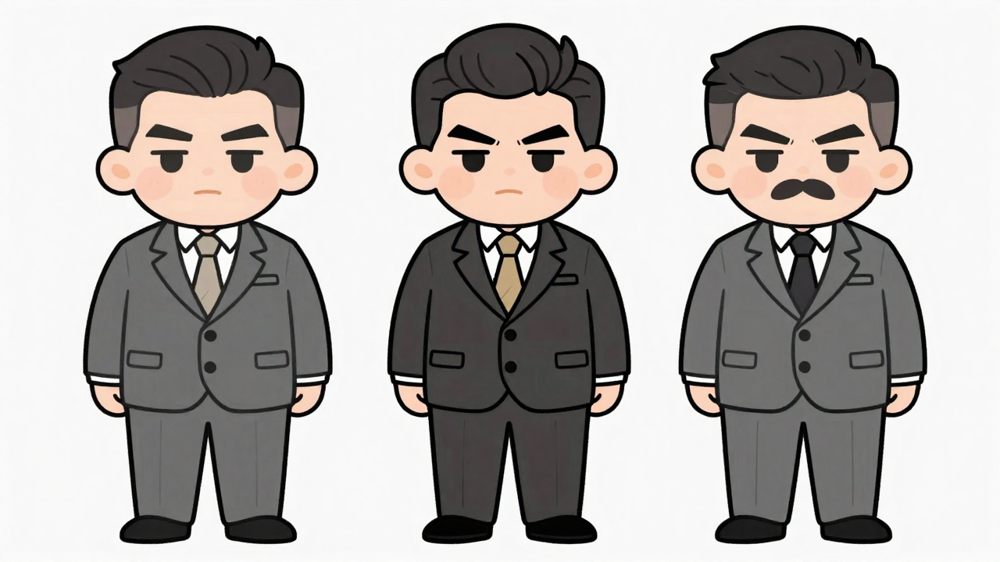
The generated image captures the overall chibi art style and body proportions well. However, it significantly deviates from the target in key character details: all generated characters display angry/stern expressions instead of the desired calm and gentle demeanor, and none consistently feature the target's specific mustache style or three-button suit jacket. Additionally, the prompt for a "SINGLE character" was ignored, and suit colors vary from the requested dark charcoal grey.
(masterpiece, best quality:1.2), 2D cartoon illustration, anime art style, chibi character, clean medium-thick line art, subtle cel-shading, flat colors, character reference sheet, SINGLE character, full-body standing pose, clear face, distinct hair, chibi proportions, Round face, (calm neutral expression:1.6), (thoughtful expression:1.4), (gentle eyes:1.4), (small neat short mustache:1.8), (thin mustache:1.7), (neatly combed hair:1.5), (side part hairstyle:1.5), Sturdy build, slightly portly but not excessively wide. Era-appropriate European business attire, (dark charcoal grey well-fitted suit:1.5), white shirt, (light beige tie:1.2). Suit jacket with (three buttons:1.8), (classic suit lapels:1.2). Clothing simplified with crisp outlines and smooth cel-shading. Clean minimalist neutral background, soft even lighting, 16:9 widescreen composition.
(worst quality, low quality:1.4), rough lines, messy sketch, blur, deformed, bad anatomy, bad proportions, missing fingers, extra digits, signature, watermark, text, words, Chinese characters, subtitles, logos, thick lines, flat shading, black tie, dark tie, (angry expression:2.0), (stern expression:2.0), (furrowed brows:2.0), (scowling:2.0), (large mustache:1.8), (prominent mustache:1.8), (handlebar mustache:1.8), (bushy mustache:1.8), (undercut hairstyle:1.8), (fade hairstyle:1.8), (two buttons:2.0), (2 buttons:2.0), (fewer than three buttons:2.0), excessively wide body, overly portly, (light grey suit:1.5), (medium grey suit:1.5).
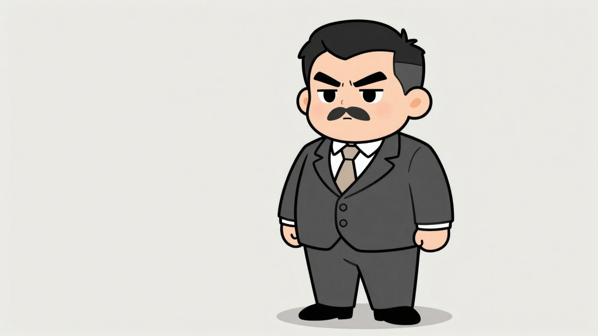
The generated image successfully captures the chibi art style and general body proportions. However, it significantly deviates in key character details, presenting a stern expression, a thicker mustache, an incorrect undercut hairstyle, and a suit jacket with two buttons instead of the target's three, along with a slightly lighter suit color.
(masterpiece, best quality:1.2), 2D cartoon illustration, anime art style, chibi character, clean medium-thick line art, subtle cel-shading, flat colors, character reference sheet, SINGLE character, full-body standing pose, clear face, distinct hair, chibi proportions, Round face, (calm neutral expression:1.4), (thoughtful expression:1.3), (gentle eyes:1.2), (small neat short mustache:1.5), (not large mustache:1.5), (not prominent mustache:1.5). Sturdy build, slightly portly but not excessively wide. Era-appropriate European business attire, dark charcoal grey well-fitted suit, white shirt, light beige tie. Suit jacket with (three buttons:1.5). Clothing simplified with crisp outlines and smooth cel-shading. Clean minimalist neutral background, soft even lighting, 16:9 widescreen composition.
(worst quality, low quality:1.4), rough lines, messy sketch, blur, deformed, bad anatomy, bad proportions, missing fingers, extra digits, signature, watermark, text, words, Chinese characters, subtitles, logos, thick lines, flat shading, black tie, dark tie, (angry expression:1.8), (stern expression:1.8), (furrowed brows:1.8), (scowling:1.8), (large mustache:1.6), (prominent mustache:1.6), (handlebar mustache:1.6), (bushy mustache:1.6), (two buttons:1.8), (2 buttons:1.8), (fewer than three buttons:1.8), excessively wide body, overly portly.
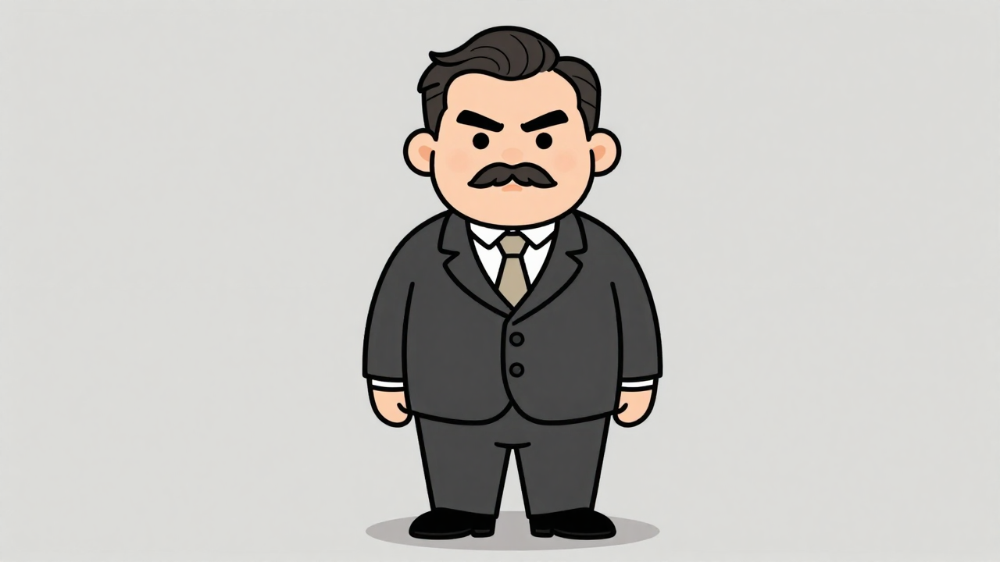
The generated image successfully captures the requested 2D chibi art style, color palette, and overall attire. However, it significantly deviates in facial expression, presenting an angry look instead of the desired calm and thoughtful demeanor. Additionally, the mustache is larger and more prominent than intended, the character's build is wider, and the suit jacket incorrectly features two buttons instead of three.
(masterpiece, best quality:1.2), 2D cartoon illustration, anime art style, chibi character, clean medium-thick line art, subtle cel-shading, flat colors, character reference sheet, SINGLE character, full-body standing pose, clear face, distinct hair, chibi proportions, 安德烈米其林 (André Michelin): A historical figure in Q版 (chibi) style. Round face, calm neutral expression, thoughtful expression, small neat short mustache, not large, not prominent. Sturdy, slightly portly build. Era-appropriate European business attire, dark charcoal grey well-fitted suit, white shirt, light beige tie. Suit jacket with three buttons. Clothing simplified with crisp outlines and smooth cel-shading. Clean minimalist neutral background, soft even lighting, 16:9 widescreen composition.
(worst quality, low quality:1.4), rough lines, messy sketch, blur, deformed, bad anatomy, bad proportions, missing fingers, extra digits, signature, watermark, text, words, Chinese characters, subtitles, logos, thick lines, flat shading, black tie, dark tie, (angry expression:1.5), (stern expression:1.5), (furrowed brows:1.5), (large mustache:1.3), (prominent mustache:1.3), (handlebar mustache:1.3), two buttons, 2 buttons, fewer than three buttons.
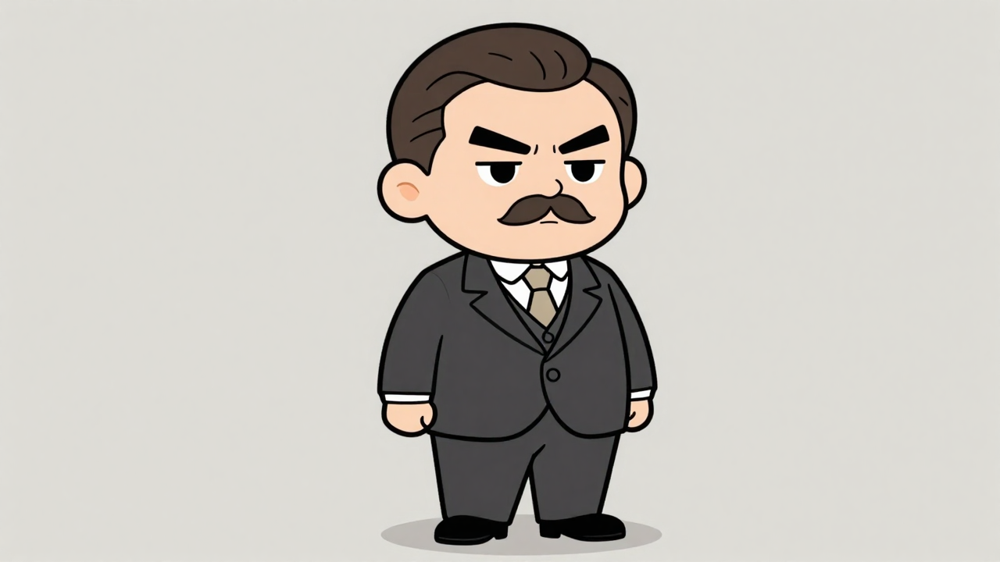
The current image successfully captures the chibi art style, body proportions, and general color palette. However, the facial expression is significantly different, portraying anger instead of the target's thoughtful neutrality. Additionally, the mustache is larger and more prominent than the neat, small style desired, and the suit jacket has two buttons instead of the target's three.
(masterpiece, best quality:1.2), 2D cartoon illustration, anime art style, chibi characters, clean medium-thick line art, subtle cel-shading, flat colors, Character reference sheet, SINGLE character only, full-body standing pose, clear face, distinct hair, body proportions and signature outfit colors, no other characters, no collage, no extra props, no text, no labels, no watermarks, 安德烈米其林 (André Michelin): A historical figure depicted in Q版 (chibi) style. His face is round and expressive, with a neat, small, short mustache and a thoughtful, neutral expression. He has a sturdy, slightly portly build, reflecting a businessman of the early 20th century, all in chibi proportions. Dressed in era-appropriate European business attire, a dark charcoal grey, well-fitted suit, white shirt, and a light beige tie. Clothing is simplified with clear, crisp outlines and smooth cel-shading, lacking intricate fabric patterns., clean minimalist neutral background, soft even lighting, 16:9 widescreen composition
(worst quality, low quality:1.4), rough lines, messy sketch, blur, deformed, bad anatomy, bad proportions, missing fingers, extra digits, signature, watermark, text, words, Chinese characters, subtitles, logos, thick lines, flat shading, large mustache, handlebar mustache, black tie, dark tie, angry expression, stern expression, furrowed brows
The generated image successfully captures the chibi art style and general body proportions of a portly businessman, aligning well with the overall concept. However, it deviates significantly in key character details such as the mustache, which is much larger and more handlebar-like than the target's neat, small one. Additionally, the tie color is black instead of the target's light beige, and the facial expression is stern rather than thoughtful, impacting the character's persona.
(masterpiece, best quality:1.2), 2D cartoon illustration, anime art style, chibi characters, clean line art, cell shading, flat colors, Character reference sheet, SINGLE character only, full-body standing pose, clear face, distinct hair, body proportions and signature outfit colors, no other characters, no collage, no extra props, no text, no labels, no watermarks, 安德烈米其林 (André Michelin): A historical figure depicted in Q版 (chibi) style. His face is round and expressive, with a neat, small mustache and a thoughtful or determined expression. He has a sturdy, slightly portly build, reflecting a businessman of the early 20th century, all in chibi proportions. Dressed in era-appropriate European business attire, such as a dark, well-fitted suit, white shirt, and tie. Clothing is simplified with clear, crisp outlines and smooth cel-shading, lacking intricate fabric patterns., clean minimalist neutral background, soft even lighting, 16:9 widescreen composition
(worst quality, low quality:1.4), rough lines, messy sketch, blur, deformed, bad anatomy, bad proportions, missing fingers, extra digits, signature, watermark, text, words, Chinese characters, subtitles, logos